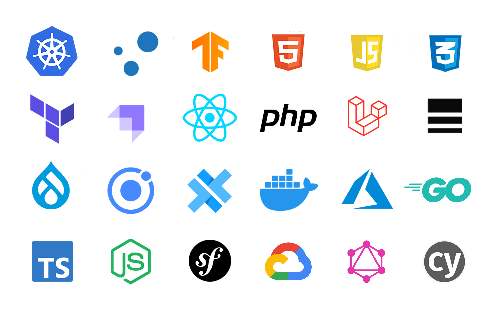

🚀 Reload on GitHub

Reload is a Copenhagen-based digital agency with deep roots in open source, modern web development, and long-term digital partnerships.
Since 2010, we’ve been designing, building and maintaining robust digital platforms for organisations that need reliable, scalable and user-centric solutions. We’re developers, designers and strategists working closely together – and with our clients – to deliver code that works in the real world.
Our team is particularly strong in:
- Open source technologies – especially Drupal, Laravel, React (and Javascript in general), and PHP
- CI/CD and DevOps – we’ve worked with automated pipelines, test automation and containerised infrastructure for over a decade
- Kubernetes and cloud-native architecture – we architect scalable infrastructure using best practices in observability, deployment and resilience
- Quality assurance – we care deeply about code quality, documentation, testing and maintainability
- Collaborative workflows – we build close, long-term relationships with our clients and often work as an embedded development team alongside their internal teams
We don’t just use open source – we contribute back when we can. You’ll find tools, modules, scripts and experiments here on our GitHub that reflect how we work, what we’re exploring, and what we think the community might find useful.
We’re strong believers in building things that last – and in doing it the right way, from infrastructure to interface.
✉️ Want to get in touch?

Visit us at reload.dk or drop us a message – we’re always happy to talk shop.

Find us on the web on reload.dk (in Danish though).